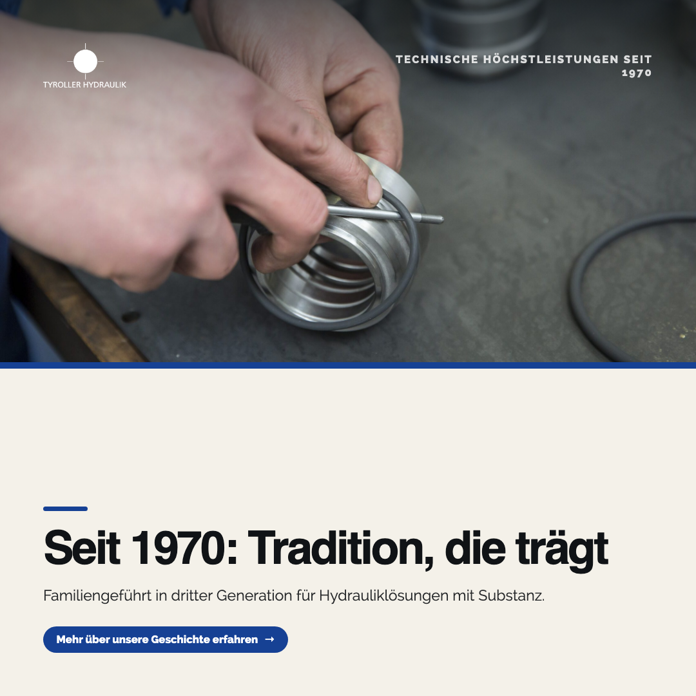
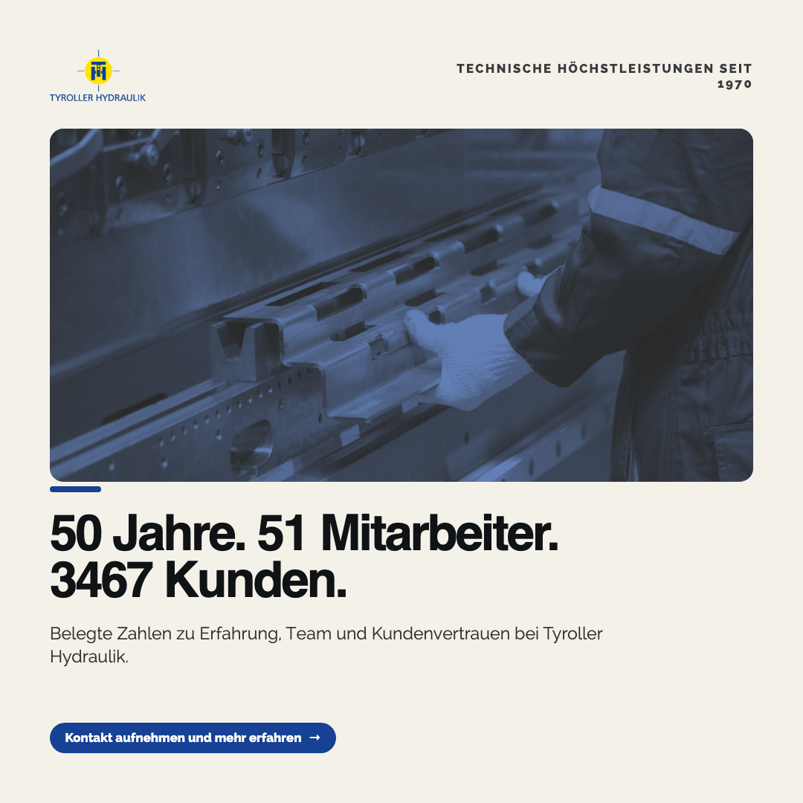
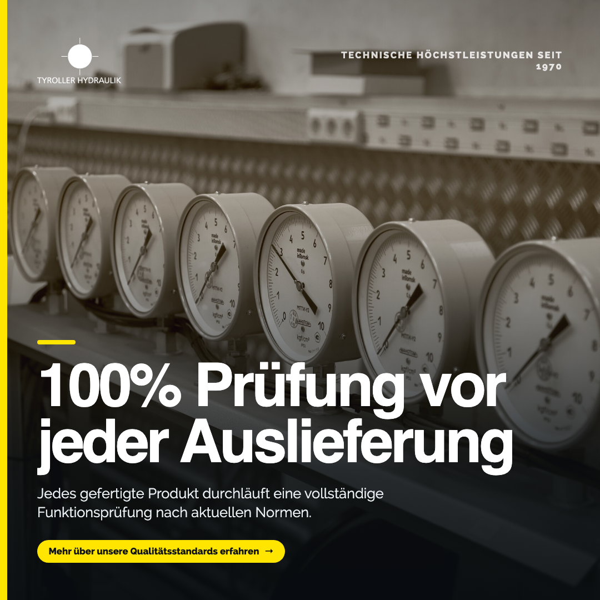

MARKETS
EDITION 08 · 2026
TYROLLER
HYDRAULIK
Wie Tyroller Hydraulik seine fachliche Autorität und Tradition auf LinkedIn, Instagram und Facebook sichtbar macht.
![TYROLLER HYDRAULIK]()
Wo TYROLLER HYDRAULIK
heute steht
Bestandsaufnahme von Marke, Kanälen und bisheriger Kommunikation — ehrlich und ohne Schönfärberei.
Wo TYROLLER HYDRAULIK heute steht
Stärken treffen Chancen
- —Familiengeführtes Unternehmen in dritter Generation seit 1970
- —50 Jahre Erfahrung in der Hydraulikbranche
- —100%-Funktionsprüfung jedes gefertigten Produkts nach aktuellen Normen
- —Breites Produktportfolio als Systempartner von Konzept bis Serienreife
- —Fehlende H1-Überschrift auf 5 von 11 Seiten
- —Nur 41% der Bilder besitzen einen Alt-Text
- —Keine vollständigen Open-Graph-Tags für Social-Media-Vorschau
- —Keine FAQ-Inhalte für KI-gestützte Sichtbarkeit vorhanden
- —LinkedIn kann Fachautorität bei technischen Entscheidern stärken
- —FAQ-Content kann Sichtbarkeit in KI-Suchen erschließen
- —Nischenthemen wie Amusementrides können Differenzierung im Markt schaffen
- —Regelmäßige Social-Media-Präsenz kann Vertrauen bei jungen Entscheidern aufbauen
- —Wettbewerber mit aktiverer Social-Media-Präsenz können Sichtbarkeit gewinnen
- —Fehlende FAQ-Formate riskieren Unsichtbarkeit in KI-basierten Suchanfragen
- —Unregelmäßige Bespielung kann bestehende Kanäle an Wirkung verlieren lassen
- —Regionale Wettbewerber könnten digitale Präsenz schneller ausbauen
Klare Ziele,
klare Kennzahlen
Vier priorisierte Ziele, abgeleitet aus dem Status quo — jedes mit Kennzahlen, an denen sich Erfolg messen lässt.
Vier Ziele, die aufeinander einzahlen
LinkedIn als Leitkanal etablieren, um technische Entscheider mit Fachcontent zu erreichen und Vertrauen aufzubauen.
Die von der Website verlinkte Facebook-Seite regelmäßig und strategisch bespielen für regionale Reichweite.
Instagram-Präsenz aufbauen, um technische Themen visuell zu ergänzen und Unternehmenskultur sichtbar zu machen.
Content entlang der Customer Journey gestalten, um Interessenten zur Kontaktaufnahme zu bewegen.
Drei Kanäle,
klare Rollen
LinkedIn, Instagram und Facebook — jeder mit eigener Aufgabe, Zielgruppe und Tonalität, aber einer gemeinsamen Story.
Jeder Kanal mit eigener Aufgabe
Einmal produzieren, dreimal erzählen
Die Geschichte von drei Generationen und 100%-Funktionsprüfung wird kanalspezifisch erzählt: fachlich auf LinkedIn, visuell auf Instagram, community-nah auf Facebook. So erreicht Tyroller Hydraulik technische Entscheider, Nachwuchskräfte und regionale Partner gleichermaßen.
Wie die 100%-Funktionsprüfung jedes Produkt vor Auslieferung absichert – ein Qualitätsversprechen für technische Entscheider.
Drei Generationen, ein Standort: Einblicke in 50 Jahre Firmengeschichte in Waidhofen.
50 Jahre Erfahrung, 3467 zufriedene Kunden – Tyroller Hydraulik feiert Tradition und Verlässlichkeit in der Region.
Fünf Content-
Pillars
Ein System aus Themensäulen — damit jeder Beitrag ein Ziel hat und die Marke über Zeit ein klares Profil bekommt.
Fünf Säulen, ein Profil
Erklärungsbedürftige Hydrauliklösungen verständlich und vertrauensbildend aufbereiten.
Leistungsspektrum entlang konkreter Nutzenversprechen statt reiner Aufzählung erklären.
Werte- und Qualitätsversprechen mit belegbaren Fakten unterlegen.
Mitarbeitende und Unternehmenswerte sichtbar machen, um Nähe und Recruiting zu stärken.
Nur belegte Kennzahlen und überprüfbare Entwicklungen für Glaubwürdigkeit nutzen.
Von der Säule zum Beitrag
Vom Plan
zum Beitrag
Ein konkreter Redaktionsplan über vier Wochen — mit realistischer Frequenz, Formatmix und ausgewogenen Contentschwerpunkten.
Redaktionsplan · Woche 1 & 2
Redaktionsplan · Woche 3 & 4
Zwölf Posts,
kein Copy-Paste
Vier Beiträge je Kanal — kanalgerecht in Tonalität, Format und CTA, als fertige KI-Motive im 4-Wochen-Kalender. Anschließend drei davon als Mockup im TYROLLER HYDRAULIK-Branding.
Zwölf Motive, ein Fahrplan

Vertrauen, Qualität & Verantwortung
1970 hat Johann Tyroller den Mut aufgebracht, sich mit einem eigenen Betrieb in der Hydraulik selbstständig zu machen. Heute führen wir Tyroller Hydraulik in dritter Generation – als familiengeführtes Unternehmen, das traditionelle Werte mit moderner Fertigungstiefe verbindet. Für technische Entscheider bedeutet das: ein Systempartner, der nicht nur auf dem Papier Kontinuität verspricht, sondern sie seit mehr als 50 Jahren im Tagesgeschäft beweist – von der ersten Konstruktionsidee bis zur Serienreife. Wer langfristige Partnerschaften in der Hydraulik sucht, findet bei uns ein Unternehmen, das Verlässlichkeit als Geschäftsprinzip versteht.
#Familienunternehmen #Hydraulik #Tradition


Zahlen, Entwicklung & Nachweise

tyroller_hydraulik 50 Jahre Erfahrung. 51 motivierte Mitarbeiter*innen. 3467 zufriedene und aktive Kunden. Zahlen, die zeigen, worauf es in der Hydraulik wirklich ankommt: Kontinuität und Vertrauen. Seit 1970 wachsen wir gemeinsam mit unseren Kunden – Schritt für Schritt, Projekt für Projekt.

Vertrauen, Qualität & Verantwortung
Qualität ist für uns kein Versprechen, sondern gelebte Praxis: Jedes einzelne Produkt, das unser Werk in Waidhofen verlässt, wird vor der Auslieferung einer 100%-Funktionsprüfung nach den aktuell gültigen Normen unterzogen. So stellen wir sicher, dass unsere Hydraulikkomponenten zuverlässig arbeiten – egal wo sie im Einsatz sind.

Von der Idee
zur Umsetzung
Was wir empfehlen — und wie eine Zusammenarbeit konkret abläuft, Schritt für Schritt.
Vier Empfehlungen auf den Punkt
Ein LinkedIn-Unternehmensprofil einrichten und mit Fachbeiträgen zur 100%-Funktionsprüfung und Systempartnerschaft technische Entscheider gezielt ansprechen.
Die bestehende Facebook-Seite mit einem klaren Redaktionsplan regelmäßig bespielen, statt sie ungenutzt liegen zu lassen.
Fehlende H1-Überschriften, Alt-Texte und Open-Graph-Tags ergänzen, um Sichtbarkeit in Suche und Social-Media-Vorschauen zu verbessern.
Zitierfähige Frage-Antwort-Formate zu Hydrauliklösungen aufbauen, um Sichtbarkeit in KI-gestützten Suchanfragen langfristig zu sichern.
So arbeiten wir zusammen
Ziele, Tonalität und Themen gemeinsam schärfen.
Monatlicher Contentplan je Kanal und Pillar.
Text, Grafik & Video — im Branding des Kunden.
Kurze Freigabeschleife — Sie behalten die Kontrolle.
Ausspielung, Monitoring und Antworten.
Kennzahlen auswerten — und zurück zu Schritt 1.
Was Umsetzung kostet
Marketingkonzept, 9 Posts, Flyer, Print-Vorlagen, Visitenkarten, private Landingpage & SEO/GEO-Check — in 24 h.
Sprechen wir über
Ihre Sichtbarkeit.
Ein unverbindliches Erstgespräch genügt, um zu sehen, was für TYROLLER HYDRAULIK realistisch drin ist. Ich freue mich darauf.
MARKETS
![QR-Code]()